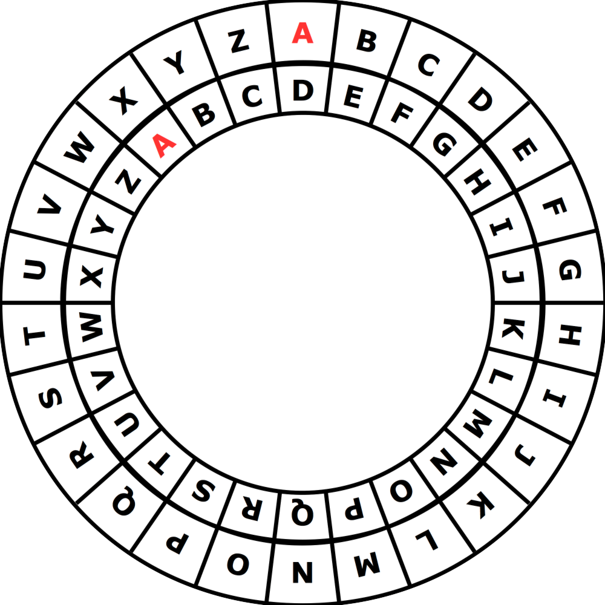

午餐吃什麼？
Bibo和Biba喜歡利用加密的方式來互傳訊息，為了幫訊息加密，他們使用了一個叫做「加密碟」的裝置，加密碟的設計包含一個外碟和內碟（如下圖）。 每天Bibo會送一個加密訊息給Biba，內容講的是今天中午要吃什麼？該訊息是這樣加密的：
- Bibo寫下要想吃的餐廳名稱，如PIZZA
- 在每一個字母的下方他會標註一個1到9的數字來表示內碟要從原來字母對齊的位置往左（逆時針）轉多少格。例如在右圖中內碟往左轉了三格。
- 接著Bibo把旋轉之後對應到的內碟字母寫下來。右圖中外碟P對應到的內碟字母是S。
- Bibo把加過密的訊息送給Biba，然後Biba則要解碼之後才知道午餐的內容。

範例，Bibo要吃PIZZA所以把訊息加密成：
| 原始訊息 | P | I | Z | Z | A |
| 逆時針旋轉 | 3 | 1 | 4 | 3 | 1 |
| 加密後的訊息 | S | J | D | C | B |
今天Biba收到的訊息如下，請問Bibo今天午餐想要吃什麼呢？（請填入英文大寫；作答範例：APPLE）
| 原始訊息 | ? | ? | ? | ? | ? | ? | ? |
| 逆時針旋轉 | 3 | 5 | 1 | 7 | 2 | 4 | 8 |
| 加密後的訊息 | O | F | T | H | I | R | I |